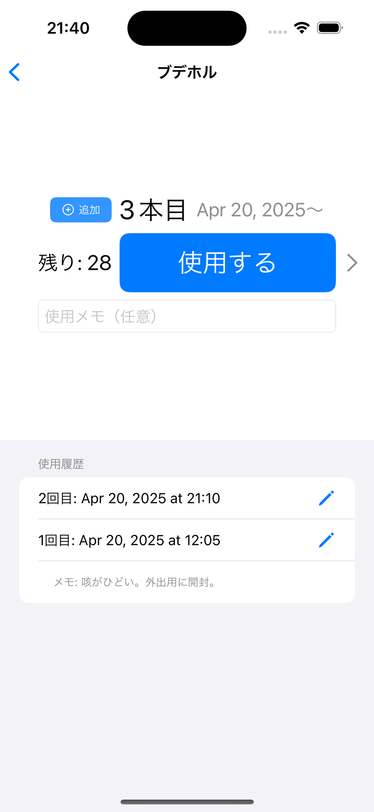

MediCount
Controle as doses restantes de inaladores e sprays nasais
Conte as doses e veja o restante—para rinite, alergias, asma e mais

Controle as doses restantes de inaladores e sprays nasais
Conte as doses e veja o restante—para rinite, alergias, asma e mais
Novembro de 2026 — Versão 3.02.00: backup gratuito e suporte ao iPad.
Um app para controlar facilmente as doses restantes de medicamentos que não mostram quanto resta—como inaladores para asma e sprays nasais para rinite e alergias. Registre cada dose com um contador e veja o restante num relance.
O que faz: Informe o total de doses e quantas já usou, e o app mostra o restante em tempo real.
Vantagem: Saiba sempre quantas doses restam e não se preocupe em ficar sem.
O que faz: Basta tocar no botão “Usar” para registrar uma dose. O histórico é salvo automaticamente.
Vantagem: Simples de usar, para não esquecer registros e manter a contagem certa.
O que faz: Cadastre várias unidades do mesmo medicamento (ex.: Unidade 1, Unidade 2) e acompanhe o restante e o histórico de cada uma.
Vantagem: Fica fácil se organizar e ver num relance quanto resta em cada uma.
O que faz: Registre data, hora e uma nota de cada dose, e edite ou exclua quando precisar.
Vantagem: Reveja as doses anteriores—útil ao conversar com o médico ou ajustar o tratamento.
O que faz: Medicamentos em uso e acabados aparecem separados, num visual simples e fácil de ler.
Vantagem: Qualquer pessoa consegue usar, e o controle diário fica sem estresse.
O que faz: Exporte seus registros para um arquivo e importe depois. Os arquivos exportados são criptografados.
Vantagem: Leve seus registros ao trocar de celular ou ao usar iPhone e iPad. Também dá para juntar registros de outro aparelho.
O que faz: Funciona também no iPad, com visual ajustado à tela maior.
Vantagem: Confira os registros no iPad da família ou numa tela maior em casa.
A versão 4.00.00 traz os recursos abaixo. Todos os recursos existentes continuam gratuitos.
O que faz: Receba uma notificação em horários fixos todos os dias, para cada medicamento. Se já registrou a dose, não há aviso.
Vantagem: Evita esquecimentos e acaba com a dúvida “será que já usei?”.
O que faz: Organize os medicamentos da lista na ordem que preferir.
Vantagem: Deixe os mais usados no topo e registre rapidinho.
O que faz: Aprenda cada recurso testando nas telas reais do app. Nada do treino é salvo, então seus registros reais não mudam.
Vantagem: Comece sem dúvidas, mesmo na primeira vez. O app também avisa quando há recursos novos disponíveis.
O que faz: Gerencie os medicamentos de até 5 pessoas, incluindo você, separados por pessoa. Toque em um nome no topo da tela para trocar. Compre uma vez e use para sempre.
Vantagem: Veja o restante dos inaladores e sprays nasais dos filhos e da família, tudo num só app.
* Este recurso gerencia os medicamentos da família dentro deste app. Não é compatível com o Compartilhamento Familiar da Apple.
O que faz: Inclui previsão de quando vai acabar, alertas quando estiver acabando (alertas de restantes), widgets na Tela de Início, relatórios para mostrar ao médico e troca de ícone e tema. Compre uma vez e use para sempre.
Vantagem: Perceba antes de ficar sem e mostre o registro de uso direto na consulta.
O que faz: Inclui Família e Pro.
Vantagem: Use os recursos Pro com os medicamentos de toda a família.

